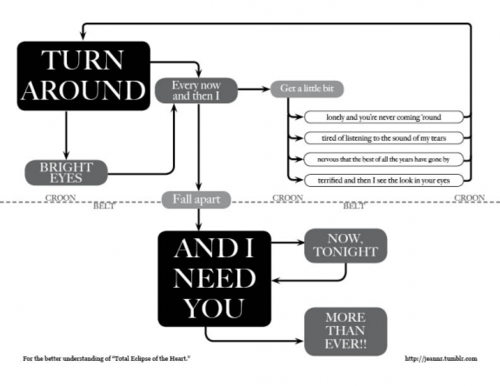
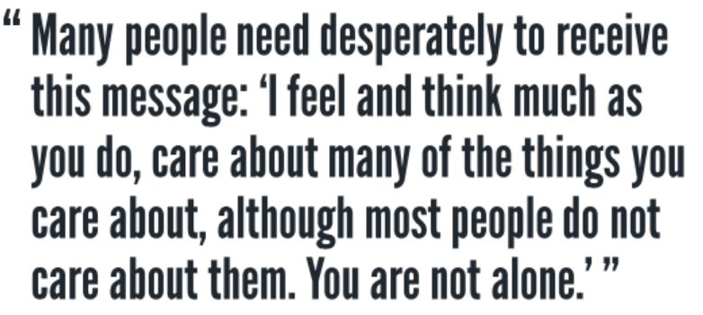
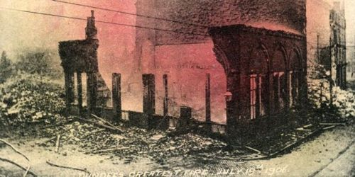
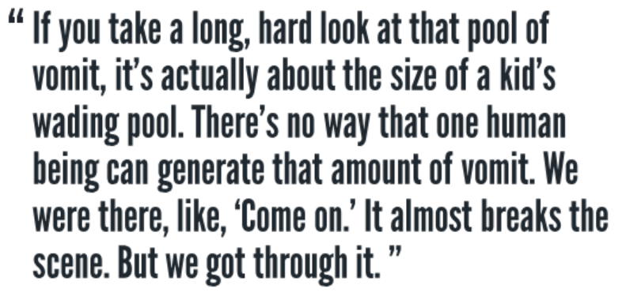
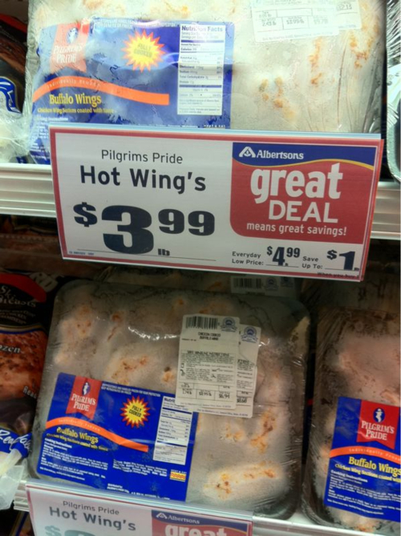

Turn Around Flowchart
2011.02.28

Kurt
2011.02.23

Postcard
2011.02.14

TV
2011.02.10

The Big Freeze
2011.02.04
No sir, we’ll never forget the Big Freeze of Aught Eleven. Someday I’ll write a song about how our pipes froze up despite our running all the faucets night and day…how I poured a whole can of Morton salt down the frozen shower drain trying in vain to melt it…how the toilet tank fill tube froze and, for days, we had to let yellow mellow and let brown stick around…how we had to wash our hands from jugs of distilled water, then wash the jug from another jug, because the first jug was now filthy from our filthy hands…how I had to shower at the Y for two days and the shower head was busted so I had to hold the hose over my head where the leak was and one day I forgot a towel and had to dry myself on a dirty t-shirt and the next day I forgot soap and had to use shampoo.
That song…will be called…”FUUUUUUUUUUUUUUUUUUUUU.”

For Skattie.